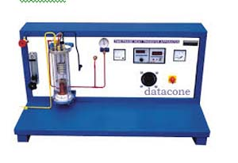

1. Bomb Calorimeter Experiment

2. Pipe losses experiment
Major and minor losses associated with pipe flow in piping networks helps in determining the pumping power requirements, material and fittings selection. A good understanding of such losses helps engineers in designing optimum fluid distribution systems, process plants etc. This apparatus is designed to introduce students to major flow losses (Frictional) in Pipes.
3. Centrifugal pump characteristics experiment – parallel and series combination
The apparatus aims to study various Centrifugal pump Characteristics such as Head against Flow, Efficiency against Flow, Speed against Flow etc.4. Lift and drag force measurements using a wind tunnel
The Wind tunnel was developed forexperimentation and demonstration purposes in the fields of aerodynamics and fluid mechanics. It is a subsonic, open wind tunnel with a square measurement section profile. Overall length is 4.5 mtrs with 1 mtr test section.
5. Variable speed centrifugal pump characteristics.
The apparatus aims to study various Centrifugal pump Characteristics such as Head against Flow, Efficiency against Flow, Speed against Flow etc.6. Reynolds Experiment
Apparatus consists of a constant head tank and a small ‘dye’ tank. The constant head tank has a horizontal/vertical transparent tube with a and a flow control valve at the discharge side. The velocity of water is varied by the flow control valve. When the dye is introduced then laminar or turbulent nature of the flow can be visualized.7. Bernoulli Experiment
The apparatus consists of converging diverging circular test section. Static Pressure tapings are provided across the length of the section and velocity head is measured with the help of measuring tank. Inlet tank is made of Perspex and discharge valve allows reading for various flow rates.
8. Concentric tube heat exchanger experiment
The objective of this experiment is to study the working principles of a concentric tube heat exchanger operating under parallel and counter flow.9. Natural convection experiment
10. Critical Heat Flux Apparatus
This apparatus is used to study the boiling heat transfer phenomena and determine critical heat flux in pool boiling of water.11. Pin Fin Apparatus
This apparatus is used to determine the variation of temperature along the length of the pin fin under forced convection12. Energy Balance of IC engine
The main objective of the experiment is to measure the energy contributions to the diesel engine, which is treated as a thermodynamics system. The energy contributions that are not measured may then be estimated from an energy balance.13. Emission characteristics of IC engine

14. Two Phase Heat Transfer

A two-phase heat transfer experimental setup was built for this study and a total of many two-phase heat transfer data with different flow patterns were obtained.15. Unsteady State Heat Transfer

16. Refrigerator performance experiment

2. To study theoretical cycles and plotting of T- and P.H. charts.
3. To study the properties of refrigerant at salient point s of the cycle
17. Recirculating air conditioner experiment

1. Demonstration of heating, cooling, humidification and dehumidification for conditioning of air.
2. Demonstration of constant enthalpy mixing of two air streams.
3. Study of working of re-circulating air conditioning.
4. To study compressor efficiency at varying functioning condition.
18. Cooling Tower Experiment